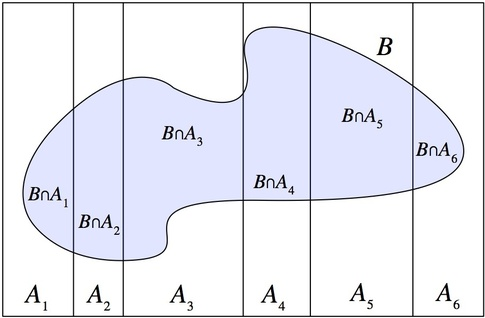

class: inverse, middle, center # More conditional probability <br> and <br> Bayes Theorem --- .left-column[ ## Preliminaries ] .right-column[ ## What do you think about this? In 2000, an Indiana Congressman wrote an op-ed that contained these words. <font size=2> In the coming weeks (...) we will hear about the scourge of tobacco and the resultant premature deaths. (...) Time for a quick reality check. Despite the hysteria from the political class and the media, <b>smoking doesn't kill.</b> In fact, <b>2 out of every three smokers does not die from a smoking-related illness and 9 out of ten smokers do not contract lung cancer.</b> </font> Suppose these numbers are true. Do you find them somehow misleading? ] -- .right-column[ .center[<img src="pence.jpg" height=200>] ] --- .left-column[ ## Preliminaries ## Intuition ] .right-column[ ## Zombie Cooties <font size=3> Now suppose that you order a personal genome mapping service from 23andme or the like. .center[<img src="23andme.png" height=180>] In every test: + There is a 2% chance of false positives and + There is a 1% chance of false negatives ] -- .right-column[ Unfortunately, your tests came out positive for Zombie Cooties.<br> How confident are you that you had a false positive? ] --- .left-column[ ## Preliminaries ## Intuition ] .right-column[ <img src="crowd2.png" width = 500><br> What if Zombie Cooties afflicts 1 in every 100 people? ] --- .left-column[ ## Preliminaries ## Intuition ] .right-column[ <img src="crowd1.png" width = 500><br> What if it afflicts 1 in every billion people? ] --- .left-column[ ## Preliminaries ## Intuition ## Problem ] .right-column[ ## Understanding the problem Let's begin by giving names to the relevant events. + $A: $ Patient has Zombie Cooties + $B: $ Test is positive. ] -- .right-column[ Now, what do we already know, and what do we need to know? <img src="probs1.png" width = 600> ] --- .left-column[ ## Preliminaries ## Intuition ## Problem ] .right-column[ ## Understanding the problem <img src="probs1.png" width = 600> We try to plug this information into the conditional probability formula... $$P(A|B) = \frac{P(A \cap B)}{P(B)}$$ ] -- .right-column[ ...Oops. We don't know $P(A \cap B)$ or $P(B)$. :-( ] --- .left-column[ ## Preliminaries ## Intuition ## Problem ## Table ] .right-column[ ## Probability of true positive (Table method) First, let's try putting all states of the world in a table, and just compute all probabilities. ] .right-column[ <img src="probs3.png" width = 500> With this table we can compute any conditional probability. ] --- .left-column[ ## Preliminaries ## Intuition ## Problem ## Table ] .right-column[ ## Probability of true positive (Table method) Let's begin with $P(A\cap B)$ -- or `P(A and B)`, as the book denotes. We don't know that. But we do know $P(B|A)$ and $P(A)$. Do you know any formulas that use these three components? ] -- .right-column[ $P(B|A) = \frac{P(A\cap B)}{P(A)}$ ] --- .left-column[ ## Preliminaries ## Intuition ## Problem ## Table ] .right-column[ ## Probability of true positive (Table method) Let's begin with $P(A\cap B)$ -- or `P(A and B)`, as the book denotes. We don't know that. But we do know $P(B|A)$ and $P(A)$. Do you know any formulas that use these three components? ] .right-column[ $P(B|A) = \frac{P(A\cap B)}{P(A)}$ <img src="probs1.png" width = 400> ] --- .left-column[ ## Preliminaries ## Intuition ## Problem ## Table ] .right-column[ ## Probability of true positive (Table method) Let's begin with $P(A\cap B)$ -- or `P(A and B)`, as the book denotes. We don't know that. But we do know $P(B|A)$ and $P(A)$. Do you know any formulas that use these three components? ] .right-column[ $0.99 = \frac{P(A\cap B)}{0.001}$ <img src="probs1.png" width = 400> ] --- .left-column[ ## Preliminaries ## Intuition ## Problem ## Table ] .right-column[ ## Probability of true positive (Table method) Let's begin with $P(A\cap B)$ -- or `P(A and B)`, as the book denotes. We don't know that. But we do know $P(B|A)$ and $P(A)$. Do you know any formulas that use these three components? ] .right-column[ $0.99 = \frac{P(A\cap B)}{0.001} \implies P(A \cap B) = 0.99 \times 0.001 = 0.0099$ <img src="probs1.png" width = 400> ] --- .left-column[ ## Preliminaries ## Intuition ## Problem ## Table ] .right-column[ ## Probability of true positive (Table method) Next we can deal with $P(A^c\cap B)$ -- or `P(not A and B)`. This time we do know $P(B|A^c)$ and $P(A)$. Same deal. ] .right-column[ $P(B|A^c) = \frac{P(A^c \cap B)}{P(A^c)}$ <img src="probs1.png" width = 400> ] --- .left-column[ ## Preliminaries ## Intuition ## Problem ## Table ] .right-column[ ## Probability of true positive (Table method) Next we can deal with $P(A^c\cap B)$ -- or `P(not A and B)`. This time we do know $P(B|A^c)$ and $P(A)$. Same deal. ] .right-column[ $0.02 = \frac{P(A^c \cap B)}{1-0.001}$ <img src="probs1.png" width = 400> ] --- .left-column[ ## Preliminaries ## Intuition ## Problem ## Table ] .right-column[ ## Probability of true positive (Table method) Next we can deal with $P(A^c\cap B)$ -- or `P(not A and B)`. This time we do know $P(B|A^c)$ and $P(A)$. Same deal. ] .right-column[ $0.02 = \frac{P(A^c \cap B)}{1-0.0.001} \implies P(A^c \cap B) = 0.02 \times 0.999 = 0.01998$ <img src="probs1.png" width = 400> ] --- .left-column[ ## Preliminaries ## Intuition ## Problem ## Table ] .right-column[ ## Probability of true positive (Table method) This is what we have so far <img src="probs4.png" width = 450> ] -- .right-column[ The rest we can find by subtracting columnwise. e.g. $P(A \cap B^c) = P(A) - P(A \cap B)$ <img src="probs5.png", width = 450> ] --- .left-column[ ## Preliminaries ## Intuition ## Problem ## Table ] .right-column[ ## Probability of true positive (Table method) <img src="probs5.png", width = 450> We're nearly done! <img src="probs6.png" width = 500> So the probability of you **actually** having Zombie Cooties, given a positive result, is under 5%! ] --- .left-column[ ## Preliminaries ## Intuition ## Problem ## Table ## Tree ] .right-column[ ## Probability of true positive (Tree method) <img src="tree1.jpg" width = 600> ] --- .left-column[ ## Preliminaries ## Intuition ## Problem ## Table ## Tree ] .right-column[ ## Probability of true positive (Tree method) <img src="tree2.jpg" width = 600> ] --- .left-column[ ## Preliminaries ## Intuition ## Problem ## Table ## Tree ] .right-column[ ## Probability of true positive (Tree method) <img src="tree3.jpg" width = 600> ] --- .left-column[ ## Preliminaries ## Intuition ## Problem ## Table ## Tree ] .right-column[ ## Probability of true positive (Tree method) <img src="tree4.jpg" width = 600> ] --- .left-column[ ## Preliminaries ## Intuition ## Problem ## Table ## Tree ] .right-column[ ## Probability of true positive (Tree method) <img src="tree5.jpg" width = 600> ] --- .left-column[ ## Preliminaries ## Intuition ## Problem ## Table ] .right-column[ ## Probability of true positive (Tree method) <img src="tree6.jpg" width = 600> ] --- .left-column[ ## Preliminaries ## Intuition ## Problem ## Table ## Tree ] .right-column[ ## Probability of true positive (Tree method) <img src="tree7.jpg" width = 400> <font size=3> Our sample state has been <b>reduced</b>. We either: <ul> <li> Have the disease and tested positive, with "size" 0.00099 <li> Don't have the disease and tested positive, with "size" 0.01998 </ul> </font> ] --- .left-column[ ## Preliminaries ## Intuition ## Problem ## Table ## Tree ] .right-column[ ## Probability of true positive (Tree method) <img src="tree7.jpg" width = 400> <font size=3> Our sample state has been <b>reduced</b>. We either: <ul> <li> Have the disease and tested positive, with "size" 0.00099 <li> Don't have the disease and tested positive, with "size" 0.01998 </ul> We're interested in the first case, whose "relative size" is </font> $$P(A|B) = \frac{0.00099}{0.00099 + 0.01998} \approx 0.0472$$ ] --- .left-column[ ## Preliminaries ## Intuition ## Problem ## Table ## Tree ] .right-column[ ## Probability of true positive (Tree method) <img src="tree8.png" width = 500> ] -- .right-column[ $$P(A|B) = \frac{P(A \cap B)}{P(A \cap B) + P(A^c \cap B)}$$ ] --- .left-column[ ## Preliminaries ## Intuition ## Problem ## Table ## Tree ] .right-column[ ## Probability of true positive (Tree method) <img src="tree9.png" width = 500> ] -- .right-column[ $$P(A|B) = \frac{P(B | A)P(A)}{P(B | A)P(A) + P(B | A^c)P(A^c)}$$ ] --- .left-column[ ## Preliminaries ## Intuition ## Problem ## Table ## Tree ] .right-column[ ## Probability of true positive (Tree method) <img src="tree9.png" width = 500> ] .right-column[ $$P(A|B) = \frac{P(B | A)P(A)}{P(B)}$$ ] --- .left-column[ ## Preliminaries ## Intuition ## Problem ## Table ## Tree ## Formula ] .right-column[ ## Deriving Bayes Theorem We just saw the intuition behind this formula $$P(A|B) = \frac{P(B|A)P(A)}{P(B)}$$ I'll "prove" this theorem in a moment, but first let's make sense of the formula. .footnote[.red[*] <font size=1>Even though it wasn't Thomas Bayes who first published it, and it isn't really a theorem.</font>] ] --- .left-column[ ## Preliminaries ## Intuition ## Problem ## Table ## Tree ## Formula ] .right-column[ #### Bayes Theorem The conditioning bits. <img src="fmla1.jpg"> In many word problems, you'll find yourself in situations where you know $P(B|A)$ but not $P(A|B)$, or vice-versa. See you the formula relates the two? That's why it's so useful. ] --- .left-column[ ## Preliminaries ## Intuition ## Problem ## Table ## Tree ## Formula ] .right-column[ #### Bayes Theorem The $P(B)$ in the bottom. <img src="fmla2.jpg"> The bottom part is the size of the reduced sample space. Just like in the conditional probability formula, we're relating some "size" (the numerator) to the size of the sample space (the denominator.) ] --- .left-column[ ## Preliminaries ## Intuition ## Problem ## Table ## Tree ## Formula ] .right-column[ #### Bayes Theorem The <b>prior</b> $P(A)$.red[*] <img src="fmla3.jpg"> Recall that in our example $P(A)$ was the probability of having the disease. Therefore this term is small when the disease is rare. Can you see how this helps to answer the question posed in the beginning of the lecture? .footnote[<font size=1>.red[*] I'll talk more about the name "prior" later.</font>] ] --- .left-column[ ## Preliminaries ## Intuition ## Problem ## Table ## Tree ## Formula ## Proof ] .right-column[ ## Deriving Bayes Theorem Actually, Bayes Theorem is prety much just the conditional probability formula. .center[ <figure> <img src="origami-darth-vader.jpg" height = 300> <figcaption><font size=1>Bayes Theorem is conditional probability origami</font> </figcaption> </figure> ] ] --- .left-column[ ## Preliminaries ## Intuition ## Problem ## Table ## Tree ## Formula ## Proof ] .right-column[ ## Deriving Bayes Theorem First write $P(A|B)$: $P(A|B) = \frac{P(A \cap B)}{P(B)}$ <br><br> Then write $P(B|A)$: $P(B|A) = \frac{P(B \cap A)}{P(A)}$ ] --- .left-column[ ## Preliminaries ## Intuition ## Problem ## Table ## Tree ## Formula ## Proof ] .right-column[ ## Deriving Bayes Theorem Then rearrange $P(A|B)$: $P(A|B)= \frac{P(A \cap B)}{P(B)} \implies P(A \cap B) = P(A|B)P(B)$ <br><br> And do the same with $P(B|A)$: $P(B|A) = \frac{P(B \cap A)}{P(A)}\implies P(B \cap A) = P(B|A)P(A)$ ] -- .right-column[ Now, $P(A \cap B) = P(B \cap A)$, so the left-hand sides are equal. ] -- .right-column[ Therefore the right-hand sides must be equal as well. ] --- .left-column[ ## Preliminaries ## Intuition ## Problem ## Table ## Tree ## Formula ## Proof ] .right-column[ ## Deriving Bayes Theorem $P(A|B)= \frac{P(A \cap B)}{P(B)} \implies P(A \cap B) = P(A|B)P(B)$ $P(B|A) = \frac{P(B \cap A)}{P(A)}\implies P(B \cap A) = P(B|A)P(A)$ Put them together, $$P(A|B)P(B) = P(B|A)P(A)$$ ] -- .right-column[ And finally just divide through by $P(B)$: $$P(A|B) = \frac{P(B|A)P(A)}{P(B)}$$ ] -- .right-column[ Done! :-) ] --- .left-column[ ## Using it ] .right-column[ ## Probability of True Positive (Formula) Still remember the setup? <img src="probs1.png" width =400> Plug what we know in the formula: $$P(A|B) = \frac{P(B|A)P(A)}{P(B)}$$ ] --- .left-column[ ## Using it ] .right-column[ ## Probability of True Positive (Formula) Still remember the setup? <img src="probs1.png" width =400> Plug what we know in the formula: $$P(A|B) = \frac{0.99 \times 0.001}{P(B)}$$ ] -- .right-column[ Hm, looks like we don't have the denominator yet. .center[<font size=2>(This will happen often)</font>] ] --- .left-column[ ## Using it ## LoTP ] .right-column[ ## Law of Total Probability .center[<font size=2>(I promise this is our last detour)</font>] <font size=3> Here's something you already know from a few slides ago. There's two ways you could receive a positive result. Either <ul> <li> You have the disease and tested positive: $P(A \cap B)$ <li> You don't have the disease and tested positive: $P(A^c \cap B)$ </ul> </font>] -- .right-column[ These two events are disjoint, so $$P(B) = P(B \cap A) + P(B \cap A^c)$$ .center[<img src="lotp1.jpg" height = 200>] ] --- .left-column[ ## Using it ## LoTP ] .right-column[ ## Law of Total Probability .center[<font size=2>(I promise this is our last detour)</font>] <font size=3> Here's something you already know from a few slides ago. There's two ways you could receive a positive result. Either <ul> <li> You have the disease and tested positive: $P(A \cap B)$ <li> You don't have the disease and tested positive: $P(A^c \cap B)$ </ul> </font>] .right-column[ Moreover, we can always decompose intersections as $$P(B) = P(B|A)P(A) + P(B|A^c)P(A^c)$$ .center[<img src="lotp1.jpg" height = 200>] ] --- .left-column[ ## Using it ## LoTP ] .right-column[ ## Law of Total Probability <img src="probs1.png" height =150> ] .right-column[ Moreover, we can always decompose intersections as $$P(B) = P(B|A)P(A) + P(B|A^c)P(A^c)$$ .center[<img src="lotp1.jpg" height = 200>] ] --- .left-column[ ## Using it ## LoTP ] .right-column[ ## Law of Total Probability <img src="probs1.png" height =150> ] .right-column[ Moreover, we can always decompose intersections as $$P(B) = 0.99 \times 0.001 + 0.02 \times 0.999$$ .center[<img src="lotp1.jpg" height = 200>] ] --- .left-column[ ## Using it ## LoTP ## Put together ] .right-column[ ## Law of Total Probability <img src="probs1.png" height =150> Plug what we know in the formula: $\qquad P(A|B) = \frac{P(B|A)P(A)}{P(B)}$ ] --- .left-column[ ## Using it ## LoTP ## Put together ] .right-column[ ## Law of Total Probability <img src="probs1.png" height =150> Plug what we know in the formula: $\ \ \ \ \ P(A|B) = \frac{P(B|A)P(A)}{P(B)}$<br><br> $\qquad \qquad = \frac{P(B|A)P(A)}{P(B|A)P(A) + P(B|A^c)P(A^c)}$ ] --- .left-column[ ## Using it ## LoTP ## Put together ] .right-column[ ## Law of Total Probability <img src="probs1.png" height =150> Plug what we know in the formula: $\ \ \ \ \ P(A|B) = \frac{P(B|A)P(A)}{P(B)}$<br><br> $\qquad \qquad = \frac{P(B|A)P(A)}{P(B|A)P(A) + P(B|A^c)P(A^c)}$<br><br> $\qquad \qquad = \frac{0.99 \times 0.001}{0.99 \times 0.001 + 0.02 \times 0.999}$<br><br> $\qquad \qquad \approx 0.0472$<br><br> ] --- # Useful formulas ### Conditional probability $P(A|B) = \frac{P(A \cap B)}{P(B)}$ -- ### Chain rule $P(A \cap B) = P(A|B)P(B) = P(B|A)P(A)$ $P(A \cap B \cap C \cap D) = P(A | B \cap C \cap D) \cdot P(B | C \cap D) \cdot P(C | D) \cdot P(D)$ -- ### Total probability If $A_1, A_2, \cdots, A_n$ are mutually exclusive $P(B) = P(B \cap A_1) + \cdots + P(B \cap A_n)$ $\qquad = P(B | A_1)P(A_1) + \cdots + P(B | A_n)P(A_n)$ --- # Useful formulas ### Bayes $P(A|B) = \frac{P(B|A)P(A)}{P(B)}$ -- $\qquad = \frac{P(B|A)P(A)}{P(B|A)P(A) + P(B|A^c)P(A^c)}$ -- or if $A_1, A_2, \cdots, A_n$ are mutually exclusive $P(A_k|B) = \frac{P(B|A_k)P(A_k)}{P(B \cap A_1) + \cdots + P(B \cap A_n)}$ --- class: inverse, middle, center # In-class practice --- # Baby HW3Q6, Baby HW3Q8 A bag contains <b>three</b> balls: <font size=6> <center>bag = {🔵, 🔴, 🔴}</center> </font> If we draw two of them, what's the probability of getting <b>two</b> red balls? <br<br> -- <br><br> A bag contains <b>51</b> balls: <font size=4> <center>bag = {🔵, 🔴, 🔴, 🔴, 🔴, 🔴, 🔴, 🔴, 🔴, 🔴, 🔴, 🔴, 🔴, 🔴, 🔴, 🔴, 🔴, 🔴, 🔴, 🔴, 🔴, 🔴, 🔴, 🔴, 🔴, 🔴, 🔴, 🔴, 🔴, 🔴, 🔴, 🔴, 🔴, 🔴, 🔴, 🔴, 🔴, 🔴, 🔴, 🔴, 🔴}</center> </font> If we draw two of them, what's the probability of getting <b>two</b> red balls? --- <font face="times"> # HW4Q5 Three companies manufacture cell phones: $A$, $B$ and $C$. Due do increasing competitiveness, all three companies have released defective cell phones that explode with certain positive probability. + One in every 100 phones manufactured by $A$ explodes + One in every 1000 phones manufactured by $B$ explodes + One in every million $C$ phones explodes. The market share of each company is the same: $$P(A) = P(B) = P(C) = \frac{1}{3}$$ Your friend tell you her phone just exploded. What are the probabilities that the phone was manufactured by $A$, $B$ and $C$? --- class: inverse, middle, center # Quick Checks --- ## Quick Checks <b>Is is true that $P(A|B) = P(B|A)$?</b> <b>In what sort of problems is Bayes Theorem useful?</b> <b>What are the three components on the right-hand side of Bayes Theorem?</b> <b>How would you extend the Law of Total Probability in this case?</b> .center[] --- ## Quick Checks <b>Is is true that $P(A|B) = P(B|A)$?</b> <font size=2>No, but it's true that $P(A|B)P(B) = P(B|A)P(A)$.</font> <b>In what sort of problems is Bayes Theorem useful?</b> <font size=2>When we know $P(B|A)$, but want to know $P(A|B)$.</font> <b>What are the three components on the right-hand side of Bayes Theorem?</b> <font size=2> <ul> <li>$P(B|A)$: the opposite conditioning <li>$P(A)$: the "prior", in the sense that it's the probability of the event before we know whether $B$ happened or not. <li>$P(B)$: the restriced sample space, after we know that $B$ occurred. </ul> </font> <b>How would you extend the Law of Total Probability in this case?</b> <font size=2>$P(B) = P(B \cap A_1) + \cdots + P(B \cap A_6)$ <br><br> The intuition is the same. <br> For example, let $A_1$ be "sunny weather", $A_2$ be "rainy weather", $A_3$ be "snowy weather", etc. in such a way that $A_1, \cdots, A_6$ are all mutually exclusive and exhaust all kinds of weather. Then, if $B$ is "Vitor will arrive late his class", then the probability of Vitor arriving late is the sum of probabilities of "late" AND "sunny weather", plus the probability of "late" AND "rainy weather", etc.</font>